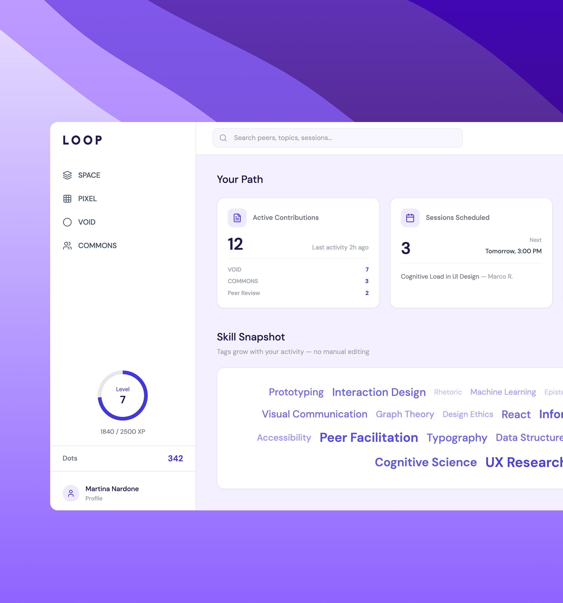
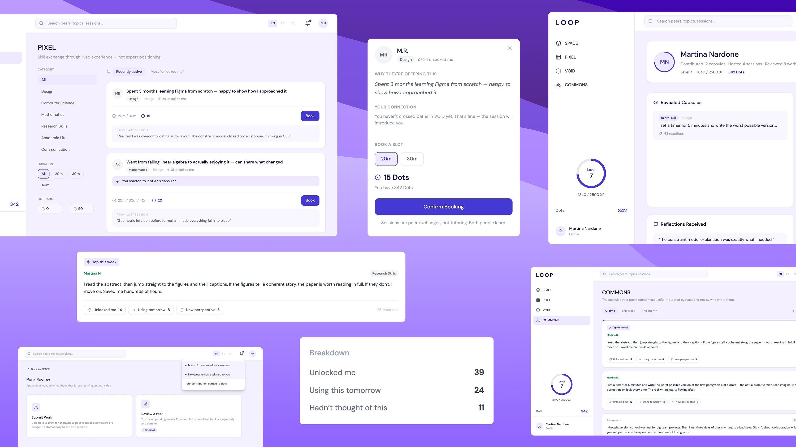

Peer learning designed around informal knowledge
LOOP explores how students can share small pieces of knowledge without the pressure of academic performance — lowering the social cost of sharing through anonymity, micro-knowledge units and peer reciprocity.

The gap between private and public sharing
A quick explanation between classmates costs nothing socially. The same explanation, turned into a public post, suddenly comes with a name attached, a permanence, and an implicit claim to expertise. LOOP starts from that gap: students constantly learn from peers, but most of that knowledge never becomes visible, because the public version of sharing carries a social cost the private version doesn't.
Identifying key sharing barriers
Given the two-day window, research here meant AI-assisted synthesis of existing patterns in peer learning and informal knowledge-sharing, rather than original user interviews — a constraint I'm explicit about, since it shapes how much weight the resulting design should carry. Three barriers repeatedly emerged from that synthesis.
Attaching your name to an idea before anyone knows if it's useful raises the stakes of the first share.
A micro-explanation doesn't feel "worth a post", so it never leaves the private conversation.
Most tools surface status and popularity rather than whether a piece of knowledge actually helped someone.
Addressing barriers through key design choices
LOOP doesn't try to fix the barriers with a single mechanism. It's structured around four environments — Space, Pixel, Void, Commons — that each carry a different amount of exposure, from anonymous and disposable to archived and credited. The three decisions below are where that structure actually does its work.
Posts are anonymous by default
Sharing an unfinished idea feels risky when your name is on it. In LOOP posts are anonymous first; recognition follows once the idea proves useful, so the first share costs almost nothing.
Qualitative reactions instead of likes
A like counter only rewards what is already popular. LOOP replaces likes with qualitative reactions — "unlocked me", "using tomorrow" — so you see how your knowledge actually landed, not how many hearts it got.
Knowledge capsules instead of posts
Publishing a "post" feels official. LOOP's unit is a small knowledge capsule — a micro-skill, a translation, a snippet — so contributing feels more like sending a message than publishing an article.
A knowledge ecosystem instead of a feed
The three decisions add up to a product where exposure is a dial, not a binary: Void lets knowledge travel anonymously and disposably, Pixel turns prior exchange into low-stakes trust for a real session, and Space replaces vague feedback with a rubric — all converging on Commons as the archive of what the community actually found useful. None of this tries to make sharing "easy" in the abstract; it tries to make the first share small enough that someone actually sends it.
SPACE
Structured peer review
PIXEL
Peer learning sessions
VOID
Anonymous micro-knowledge capsules
COMMONS
Community archive of valuable insights

Sprint evaluation and next iterations
This project was developed during a two-day exploration on integrating AI into UX workflows, using AI to support research synthesis and early concept exploration. Given the limited timeframe, the design relies on secondary insights rather than primary user research — what's presented here is a first design direction shaped by constraints, not a tested solution.
User interviews to validate the psychological barrier to sharing knowledge, before designing further around it.
The anonymity-to-reveal mechanic specifically — it's the core interaction, and the one most likely to break under real use.
It accelerated early exploration meaningfully, but it doesn't replace what only real users can tell you.